메시지 한 건에 0.75원, 그런데 계정 하나가 한 달에 6만 7천 원 — 원가를 계산하고 크레딧 결제 붙이기 (13)
2026. 11. 4.
※ 이 글은 모두의연구소(모두연) 학습 자료를 제 나름의 말로 다시 정리한 글이에요.
LLM(대형 언어 모델) 서비스는 메시지 한 건마다 돈이 나가므로, 한 건의 원가를 숫자로 재서 크레딧의 가격과 무료 한도를 정하고, 결제는 서버가 승인한 뒤에만 크레딧을 늘리게 만들어야 해요.
이 글을 읽기 전에
- 이런 게 궁금했다면
-
- "내 AI 서비스를 무료로 열어 뒀는데, 누가 하루 300개씩 보내면 돈은 누가 내요?"
- "결제 성공 페이지가 열렸으면 돈이 들어온 거 아닌가요?"
- "결제 버튼을 두 번 누르거나 새로고침하면 크레딧이 두 번 들어가나요?"
- 읽고 나면 할 수 있는 것
-
- Langfuse(AI 호출 기록을 남겨 보여 주는 관찰 도구)에 남은 호출 기록으로 메시지 한 건의 원가를 계산하고, 사용자 유형별 한 달 원가를 표로 만들 수 있어요.
- 크레딧 가격과 무료 한도를 정할 때 무엇을 먼저 계산해야 하는지 순서대로 말할 수 있어요.
- 결제 흐름 그림을 보고 «크레딧이 늘어나도 되는 시점»이 어디인지 짚을 수 있어요.
- 모르면 이런 일이 생겨요
- 어디에 쓰나
-
- 무료로 열어 둔 서비스에 사용자가 몰리기 시작했을 때. 이용자 수는 늘었는데 청구서가 더 빨리 늘어요. 그때 «얼마까지 공짜로 할지»를 어떤 숫자로 정할지 알려 줘요.
- 코딩 에이전트에게 결제 기능을 맡기기 전에, 서버가 반드시 확인해야 할 것(금액 비교, 승인, 중복 방지)을 요구 목록으로 적는 기준으로 써요.
앞의 두 편은 문제를 찾고 고친 효과를 재는 이야기였어요. 이번에는 시선을 돈으로 옮겨요. 서비스를 쓰는 사람이 늘수록 모델 호출이 늘고, 그 호출마다 요금이 나가요. 지금은 서비스를 만든 제가 전부 내고 있어요. 이 글은 원가를 숫자로 말하고, 그 숫자로 가격과 한도를 정한 뒤, 크레딧을 서버가 안전하게 받고 쌓는 순서를 정리해요. 비유는 앞 편의 식당을 이어 써요.
한 건은 작은데 — 쓰는 양이 15배, 150배로 벌어져요
제 서비스 «루틴 도장»에는 루틴이 안 이어질 때 같이 고민해 주는 AI 도우미가 있어요. 사용자가 도우미 창에 한 줄을 보낼 때마다 서버가 LLM을 부르고, 그 요금은 원가1로 제 몫이에요. Langfuse에 남은 기록으로 재 보니 메시지 한 건의 원가는 약 $0.000534(약 0.75원)였어요. 그래서 처음에는 걱정이 안 됐어요.
그런데 원가는 사용자 수가 아니라 사용량에 비례해요. 하루에 20개 쓰는 사람, 300개 쓰는 사람, 자동화로 3,000개를 보내는 계정이 있다고 하면 한 달 원가가 이렇게 벌어져요.
| 사용자 유형 | 하루 메시지(가정) | 한 달 원가 | 원으로(1달러=1,400원 가정) |
|---|---|---|---|
| 보통 사용자 | 20 | $0.32 | 약 450원 |
| 많이 쓰는 사용자 | 300 | $4.80 | 약 6,700원 |
| 자동화 악용 계정 | 3,000 | $48.05 | 약 67,000원 |
세 줄의 비율이 1 : 15 : 150이에요. 한 건이 작아 보인다고 «평균 사용자»만 보면 이 차이를 놓쳐요. 그래서 사용자가 미리 사 두는 이용권인 크레딧2을 두고, 크레딧이 있는 만큼만 쓰게 하는 방법을 생각해요.
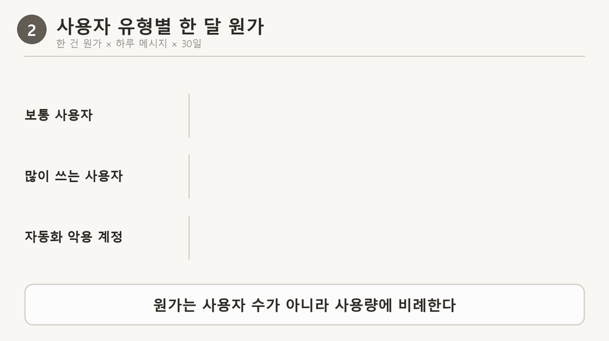
비유로 먼저 — 식권을 파는 식당
앞 편의 식당에 이번에는 식권 판매대가 생겼어요. 지금까지는 누구든 앉으면 공짜로 밥을 줬는데, 단골이 하루에 열 번씩 먹으러 오니 주인이 재료비를 감당하기 어려워졌어요. 주인은 먼저 접시 하나에 재료비가 얼마인지 적어 보고, 그 재료비로 식권 한 장의 값과 «처음 오는 손님에게 공짜로 줄 장수»를 정해요. 식권은 팔 때마다 장부에 한 줄씩 적어요. 카드로 살 때는 손님이 단말기에 카드를 꽂아 서명하는 것만으로는 부족해요. 카드사가 «이 돈을 가져가도 된다»고 확정해 줘야 비로소 식권을 건네요. 같은 영수증을 두 번 내밀어도 식권이 두 번 나가면 안 되니, 영수증 번호를 장부에 적어 같은 번호는 한 번만 받아요.
| 비유 속 요소 | 원래 개념 |
|---|---|
| 접시 하나에 드는 재료비 | 메시지 한 건의 원가(모델 호출 요금) |
| 식권, 처음 오는 손님에게 주는 공짜 식권 | 크레딧, 무료 한도 |
| 식권이 늘고 줄 때마다 한 줄씩 적는 장부 | 원장3(ledger) — 잔액은 줄을 합친 값 |
| 카드 회사와의 연결을 대신 맡아 주는 단말기 업체 | 결제 대행사4(PG) |
| 손님이 단말기에 서명하기 vs 카드사가 확정해 주기 | 결제 인증 vs 결제 승인5 |
| 영수증 번호를 장부에 적어 같은 번호는 한 번만 받기 | 멱등키6와 원장의 유일한 참조 |
핵심 한 줄: 크레딧은 결제 대행사가 결제를 승인한 뒤에만 원장에 늘리고, 같은 멱등키로는 한 번만 늘려요.
다만 여기서 비유가 끊기는 점이 있어요. 식당 주인은 손님 얼굴을 보고 «어제 온 분이네» 하고 알아보지만, 제 서비스는 계정과 로그인이 없어서 누가 같은 사람인지 알아볼 방법이 먼저 필요해요(도장에서 따로 생각할 점).
전체 흐름 — 원가에서 중복 방어까지 다섯 단계
돈이 나가는 곳을 알아내는 일에서 시작해, 받은 돈이 틀리게 반영되지 않게 막는 일까지의 순서예요. 앞의 두 단계는 계산이고, 뒤의 세 단계는 서버가 지켜야 할 규칙이에요.
원가 재기 — 메시지 한 건은 얼마인가
메시지 한 건을 처리할 때 서비스는 LLM을 여러 번 부를 수 있어요. 요금은 호출마다 입력 토큰(보낸 글)과 출력 토큰(받은 글)의 수에 단가를 곱해 매기므로, 한 건의 원가는 그 호출들의 요금을 더한 값이에요. 같은 «안녕»이라도 대화가 쌓인 사용자의 메시지가 더 비싸요. 지난 대화가 입력에 함께 들어가기 때문이에요.
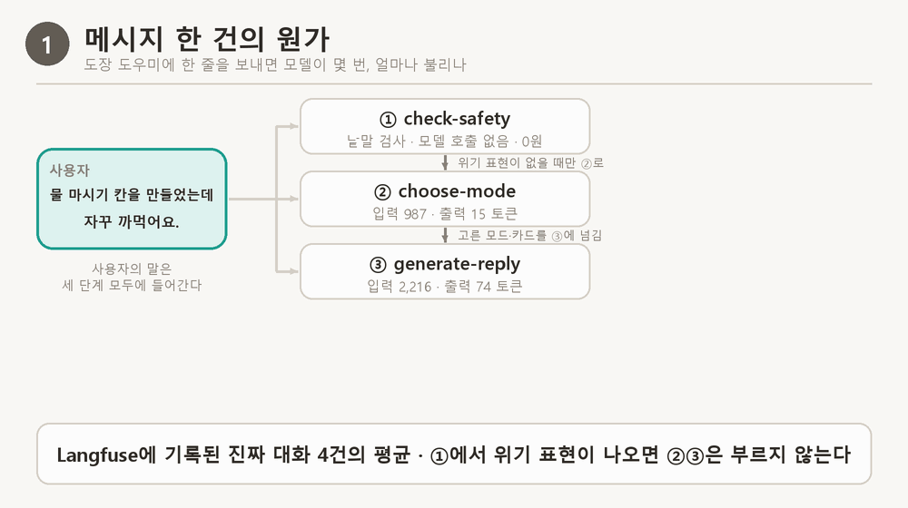
그러면 «메시지 한 건에 모델을 몇 번 불렀고 각각 얼마였는지»는 어디서 알 수 있을까요? Langfuse라는 관찰 도구에 호출 기록이 남아요. 아래 화면은 제 도우미에 메시지를 한 건 보냈을 때 Langfuse가 남긴 기록 한 장(트레이스)이에요. 모델을 부른 단계마다 비용이 따로 찍혀 있어서, 그 값을 더하면 한 건의 원가가 나와요. 이런 호출 기록 4건의 평균이 이 글에서 쓰는 한 건 원가 $0.000534예요.
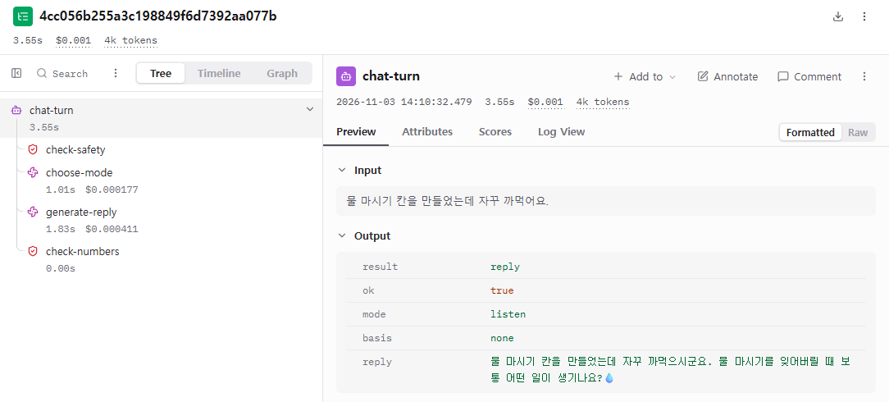
이 화면 읽는 법
- 맨 위
chat-turn은 메시지 한 건(한 턴) 전체예요. 처리에 3.55초가 걸렸고 비용은 $0.001로 표시돼요(반올림된 표시로 보여요). 입력은 «물 마시기 칸을 만들었는데 자꾸 까먹어요.»이고, 출력의reply가 도우미가 돌려준 답이에요. - 왼쪽 목록은 그 한 건이 거친 네 단계예요.
check-safety(위기 표현 검사)와check-numbers(숫자 검사)는 비용 표시가 없어요. 모델을 부르는 단계가 아니기 때문이에요. choose-mode(답할 방식 고르기)와generate-reply(답 쓰기)는 모델을 부른 호출이에요. 각각 $0.000177, $0.000411이 따로 붙어 있어요.
두 호출의 비용을 더하면 0.000177 + 0.000411 = 0.000588이에요(화면의 숫자를 제가 더한 값이에요). 이 글에서 한 건의 평균으로 쓰는 약 $0.000534와 같은 규모예요.
가격과 무료 한도 — 손익을 가장 크게 움직이는 것은 무료 한도예요
원가가 몇 원이면 크레딧 가격은 원가를 넘기기만 하면 되니, 가격은 «사용자가 낼 마음이 있는 값»과 비슷한 서비스의 값을 보고 정해요. 손익을 가장 크게 바꾸는 것은 무료 한도예요. 무료 사용자의 원가는 전부 운영자가 내고, 무료 사용자가 유료 사용자보다 훨씬 많기 때문이에요. 크레딧은 결제 한 번에 몇 원짜리를 팔 수 없어서(카드 인증, 건당 최저 수수료) 1,000원에 100개처럼 묶음으로 팔아요. 참고한 자료에는 토스페이먼츠 카드 수수료가 결제 금액의 3.4%에 부가세 10%를 더한 3.74%라고 적혀 있었어요(2026년 11월 4일에 토스페이먼츠 공식 이용요금 페이지를 열어 확인했어요. 신용·체크카드 일반 3.4%이고 부가세 10%가 별도라서 3.4 × 1.1 = 3.74%예요).
제 서비스에 대입해 본 간단한 계산이에요. 제가 세운 단순 모델이고 실제 서비스의 숫자가 아니에요. 가정은 이래요: 사용자 1,000명 중 5%인 50명만 1,000원(100크레딧)을 한 번 사서 다 쓰고, 무료 사용자 950명은 하루 무료 한도를 매일 다 써요(최악의 경우). 한 건 원가는 0.747원, 수수료는 3.74%, 고정비는 넣지 않았어요.
| 하루 무료 메시지 | 무료 사용자 한 달 원가 | 유료 50명의 수입 − 수수료 − 그들의 원가 | 한 달 손익 |
|---|---|---|---|
| 10개 | 213,006원 | 44,393원 | −168,613원 |
| 3개 | 63,902원 | 44,393원 | −19,509원 |
| 1개 | 21,301원 | 44,393원 | +23,092원 |
- 크레딧 한 개로는 남는데(1,000원 − 수수료 − 원가 75원) 전체로는 적자가 나는 경우가 있어요. 원인은 무료 사용자의 원가예요. 한도를 줄일수록 흑자 쪽으로 가요.
- 다만 한도를 줄이면 써 보기도 전에 떠나서 전환율7이 내려갈 수 있어요. 전환율은 정하는 값이 아니라 재 봐야 아는 값이라, 처음에는 한도를 작게 잡고 재 본 뒤에 늘려요.
도장에서 따로 생각할 점 — 코드와 문서에서 확인한 것
▼ 자세히 보기
같은 계산이라도 서비스마다 «크레딧을 어디에 걸지»가 달라져요. 제 서비스에서는 이런 점이 있었어요.
| 도장의 사실 | 크레딧에 미치는 영향 |
|---|---|
| 사용자가 «내 OpenAI 키(선택)»(OpenAI 모델을 쓸 때 내는 비밀 문자열)를 넣으면 그 키로 호출한다 | 그 경우 운영자 원가가 없어요. 크레딧 차감은 운영자 키로 부르는 경로에만 걸면 돼요 |
| 계정과 로그인이 없고 기록은 브라우저에만 저장된다 | «처음 온 사용자에게 무료 크레딧»을 정하려면 먼저 사용자를 알아볼 방법이 필요해요. 브라우저 데이터를 지우면 산 크레딧도 사라질 수 있어요 |
| 서버는 상태를 갖지 않는다 | 원장과 주문을 담을 저장소가 새로 필요해요. 서버 구조가 바뀌는 결정이에요 |
| «줄어드는 숫자를 보여 주지 않는다»는 서비스 원칙이 있다 | «남은 크레딧 N개»가 줄어드는 숫자라서 이 원칙과 부딪혀요. 어떻게 보여 줄지는 제가 정할 일로 남겨 뒀어요 |
| 대화 한 턴이 트레이스 하나다 | 차감 단위를 «메시지 1건 = 크레딧 1개»로 두면 Langfuse 트레이스와 일대일로 맞출 수 있어요 |
| 도장 그림 기능은 «비용이 커서» 한도가 더 빡빡하다(분당 5) | 크레딧을 더 받는 기능의 후보예요. 실제 원가는 아직 재 보지 않았어요 |
정하지 않은 것: 차감 개수, 상품표(금액·크레딧), 처음 받는 무료 크레딧, 하루 무료 메시지. 위 표와 계산은 정할 재료이고, 값은 제가 정해요.
크레딧 원장 — 잔액 하나가 아니라 기록을 쌓아요
사용자 테이블에 «잔액» 칸 하나를 두고 메시지마다 1씩 빼면 가장 쉬워요. 하지만 잔액이 이상해졌을 때 이유를 알 수 없고, 두 요청이 같은 잔액을 동시에 읽고 고치면 한쪽의 변경이 사라져요. 그래서 늘고 준 기록을 한 줄씩 쌓는 원장을 두고, 잔액은 합계로 봐요. 참조 칸을 유일하게 두면 같은 일이 두 번 기록되는 것을 데이터베이스가 막아요.
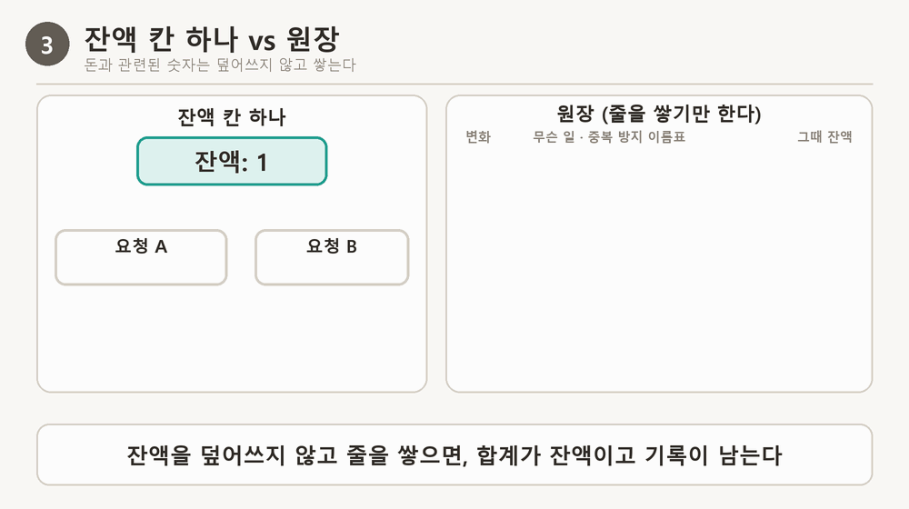
«합계가 잔액»이라는 말의 뜻
원장에는 잔액이라는 숫자를 따로 저장하지 않아요. 일어난 일을 한 줄씩 쌓기만 하고, 지금 잔액이 필요할 때 줄들의 «변화» 값을 전부 더해서 구해요. 가계부에서 통장 잔액이 입출금 내역을 다 더한 값인 것과 같아요.
| 줄 | 무슨 일 | 변화 | (그때까지의 합계) |
|---|---|---|---|
| 1 | 가입 선물 | +20 | 20 |
| 2 | 메시지 1번째 보냄 | −1 | 19 |
| 3 | 메시지 2번째 보냄 | −1 | 18 ← 지금 잔액 |
맨 오른쪽 «그때까지의 합계»는 보기 좋게 적어 둔 값이고 저장된 값이 아니에요. 잔액 칸 하나를 두는 방식은 «19»를 읽고 → 1을 빼고 → 같은 칸에 덮어써요. 그래서 두 요청이 동시에 «1»을 읽으면 한쪽의 −1이 사라져요. 줄을 쌓으면 두 요청이 각자 줄을 추가하니 −1이 둘 다 남고, 틀렸을 때는 줄을 지우지 않고 반대 줄(+1)을 추가해요.
다만 줄을 쌓는 것만으로 잔액보다 많이 쓰는 일이 막히지는 않아요. 줄을 쓰기 전의 «합계 확인»과 «−1 줄 쓰기»를 따로 하면 A와 B가 둘 다 합계 1을 읽고 각자 −1 줄을 써서 합계가 −1이 돼요. 위 그림의 오른쪽처럼 둘을 한 동작으로 묶어야 막히고, 원장은 그 줄을 남겨 두는 역할이에요. 실제로 제 시험 서버에서 둘을 따로 한 구현은 잔액 1에 동시 10건을 보냈을 때 잔액이 −9까지 내려갔고, 한 동작으로 묶은 구현은 3번 모두 1건만 통과했어요(아래 «직접 해 본 기록»).
차감은 반드시 서버에서 해요. 화면 코드에서만 확인하면 개발자 도구로 서버 주소를 직접 불러서 크레딧 없이 쓸 수 있어요. 크레딧이 모자랄 때는 «결제가 필요하다»는 뜻의 402를 돌려줘요(401은 로그인, 500은 서버 고장으로 읽혀서 화면이 오해해요).
구현 전에 정할 것 — 제 서비스에 놓아 본 질문들
▼ 자세히 보기
| 정할 질문 | 도장의 현재 상태 | 내가 정할 것 |
|---|---|---|
| 언제 차감하나 | 지금은 차감 자체가 없어요. 요청이 오면 한도 검사 후 바로 처리해요 | 받자마자(동시 요청 방어가 쉬움) 또는 답 뒤(실패한 요청에 돈을 안 받기 쉬움) |
| 답이 실패하면 | 오류로 끝나요 | 차감 안 함, 또는 되돌리는 줄(+1) |
| 크레딧이 0이면 | 속도 한도 초과는 429(요청이 너무 많다는 뜻)로 응답해요 | 크레딧 부족은 402로 따로 하고 문구를 정해요 |
| 어디서 차감하나 | 서버에서만 | 서버(화면은 보여 주기만) |
| 처음 온 사용자 | 계정이 없어요 | 알아보는 방법부터 필요 |
| 시험 방법 | 테스트에서 LLM 호출을 가짜로 바꿔 끼우는 방식이 이미 있어요 | 결제 승인 호출도 같은 방식으로 바꿔 끼워요 |
제 서비스에 붙일 자리 지도
지금 있던 것(초록)에 크레딧 확인을 끼우고, 결제 길과 표 두 개(노랑)를 새로 만들어요. 회색은 토스페이먼츠예요. 왼쪽 «메시지 보내기» 길에서는 속도 한도 다음에 «크레딧 확인·차감»이 새로 끼고, 오른쪽 «크레딧 사기» 길(상품 목록 → 주문 저장 → 결제위젯 → 금액 확인·승인·크레딧 지급)은 통째로 새로 만들어요. 새로 만드는 표는 주문(orders)과 원장(credit_ledger)이에요. 이 지도대로 실제로 구현해 눌러 본 기록은 아래 «직접 해 본 기록»에 있어요.
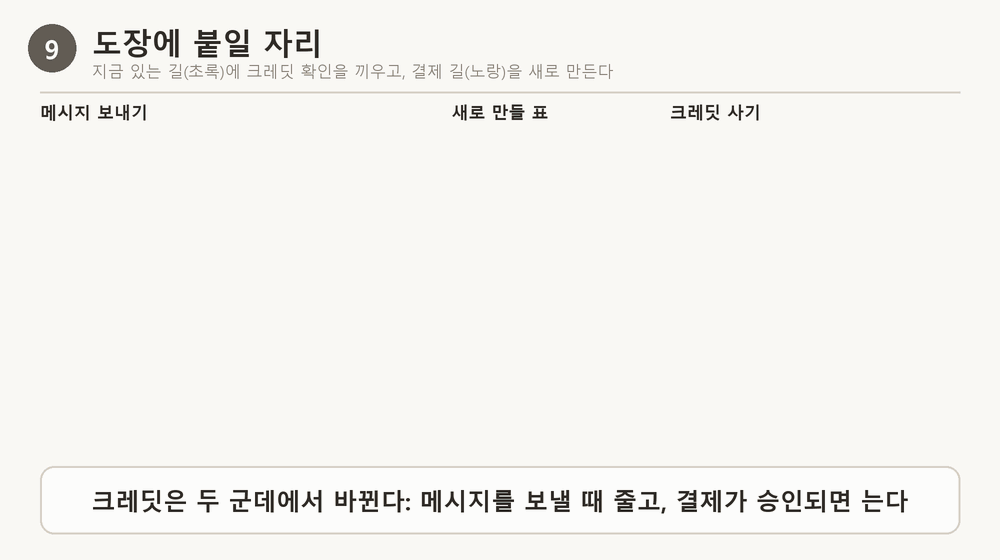
결제 흐름 — 인증과 승인은 다르다
카드 정보를 직접 다루는 대신 결제 대행사(여기서는 토스페이먼츠)의 결제위젯을 쓰면 우리 서버는 카드 번호를 보지 않아요. 결제는 두 단계예요. 사용자가 카드사 인증을 끝내는 것이 인증이고, 그 결과를 받은 서버가 승인 API로 확정해야 돈이 빠지는 것이 승인이에요. 인증만 하고 승인하지 않은 결제는 일정 시간 뒤에 사라져요.
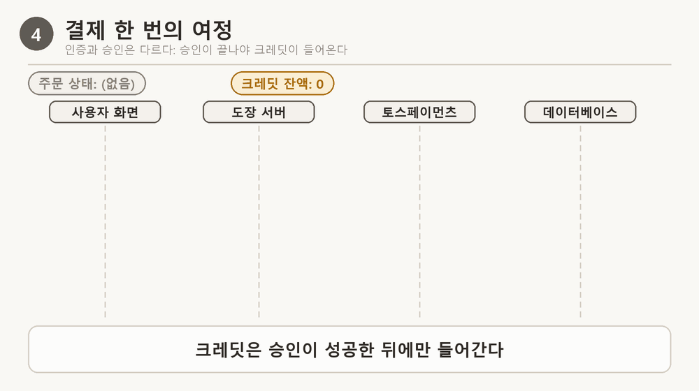
| 순서 | 누가 → 누구에게 | 무엇을 |
|---|---|---|
| 1 | 화면 → 서버 | 상품 ID만 보내요(금액은 안 보내요) |
| 2 | 서버 → 데이터베이스 | 주문을 저장해요(주문번호·금액·대기 상태) |
| 3 | 화면 → 토스페이먼츠 | 결제위젯으로 카드 인증을 해요 |
| 4 | 토스페이먼츠 → 화면 | 성공 주소(successUrl8)로 이동시켜요. 결제 키·주문번호·금액이 주소 뒤에 붙어요 |
| 5 | 화면 → 서버 | 받은 값을 전달해요(크레딧은 화면이 직접 늘리지 않아요) |
| 6 | 서버 → 데이터베이스 | 저장해 둔 금액·상태와 비교해요 |
| 7 | 서버 → 토스페이먼츠 | 시크릿 키(서버만 아는 비밀 문자열)로 승인을 요청해요 |
| 8 | 서버 → 데이터베이스 | 주문을 완료로 바꾸고 원장에 +크레딧을 쌓아요(참조: 주문번호) |
주소의 금액을 고치면? 성공 주소의 금액은 브라우저 주소창에 그대로 보여서, 사용자가 1000을 100으로 바꿔 보낼 수 있어요. 그래서 서버는 받은 금액을 믿지 않고, 2번에서 저장해 둔 주문의 금액과 같은지, 주문이 아직 대기 상태인지 먼저 확인해요. 둘 다 맞을 때만 승인을 요청해요.
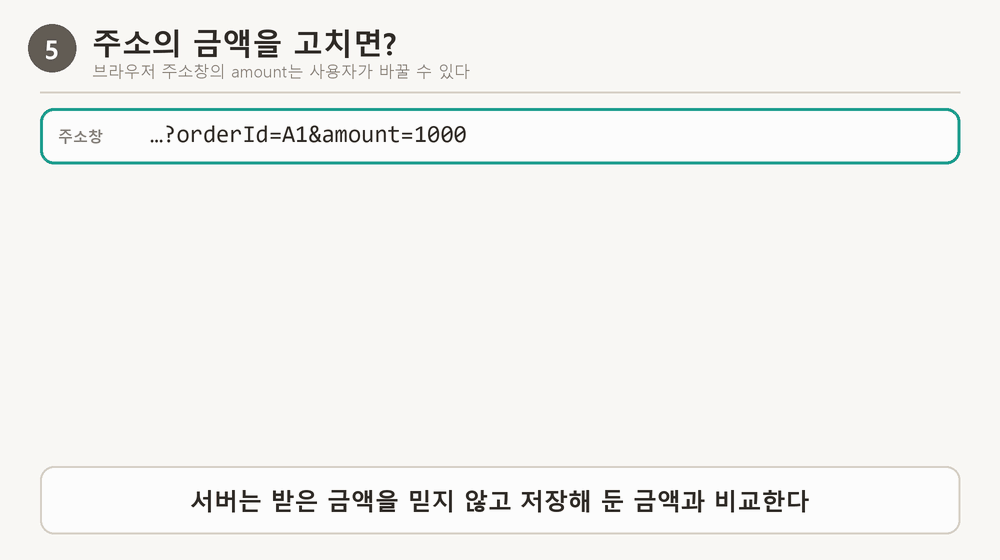
| 지킬 것 | 이유 |
|---|---|
| 주문을 먼저 서버에 저장 | 승인할 때 비교할 기준 금액이 있어야 해요 |
| 성공 주소의 금액을 저장한 금액과 비교 | 브라우저가 주소를 바꿀 수 있어요 |
| 승인은 서버가 시크릿 키로 | 시크릿 키가 화면에 있으면 누구나 결제를 승인·취소할 수 있어요 |
| 크레딧은 승인 성공 뒤에만 | 성공 주소로 이동했다는 것만으로는 돈이 들어온 것이 아니에요 |
| 같은 주문은 한 번만 처리 | 새로고침·재시도로 승인 요청이 두 번 올 수 있어요 |
시크릿 키를 서버에만 두는 방식은 LLM 키를 비밀 저장소(Secret Manager)에 두는 방식과 같은 원칙이에요. 이번에 결제를 제 서비스에 실제로 구현했고, 토스페이먼츠 테스트 키로 테스트 결제를 해 봤어요. 키는 서버의 .env 파일에만 두었고, 그 기록은 아래 «직접 해 본 기록»에 있어요.
결제 대행사 문서에서 읽은 것 — 같은 흐름을 다르게 부른 부분
▼ 자세히 보기
결제 흐름을 정리하면서 토스페이먼츠 문서 두 개(결제 흐름 이해하기, 주문서형 결제 연동하기)를 본문 끝까지 읽었어요. 위 설명과 같은 이야기인데 부르는 방식이 조금 달라서 차이를 모았어요. 어느 쪽이 맞다고 판단한 것은 아니에요.
| 문서에 적힌 것 | 이 글과의 관계 |
|---|---|
결제는 요청 → 인증 → 승인 세 단계예요. 인증이 성공하면 결제 기록이 만들어지고 결제 키(paymentKey)가 발급돼 성공 주소로 보내져요 | 이 글은 인증·승인 두 단계로 설명했고, 문서는 앞의 «요청»까지 세 단계로 불러요. 크레딧 지급이 승인 뒤인 것은 같아요 |
| 요청과 승인을 한 번에 처리하면 결과를 받으려고 웹훅(결제 결과를 서버로 알려 주는 호출)이 필수가 되고, 웹훅을 못 받으면 상점과 결제 대행사의 결과가 어긋날 수 있어요. 그래서 따로 해서 데이터 정합성을 보장해요 | 그림에서 «서버가 직접 승인»하는 단계가 있는 이유예요 |
| 결제 키는 승인·취소·조회에 쓰이고, 승인 뒤에 받는 값을 데이터베이스에 저장하라고 해요. 시크릿 키가 없으면 결제 키만으로는 어떤 API도 부를 수 없어서 외부에 보여도 괜찮다고 해요 | 서버 로그에 결제 키 전체를 남기지 않는 쪽이 더 조심하는 방식이에요 |
| 결제 요청 전에 주문번호와 최종 금액을 서버에 임시로 저장하고, 승인 전에 성공 주소의 값과 같은지 확인해요 | 이 글은 한 단계 더 나아가, 화면이 상품 ID만 보내고 금액은 서버 상품표에서 찾게 해서 금액을 보내는 길 자체를 없앴어요 |
| 승인 API는 서버에서 부르고, 시크릿 키 뒤에 콜론(:)을 붙여 base64로 만든 Basic 인증 헤더를 써요(콜론을 빠뜨리지 말 것). 성공하면 HTTP 200과 결제 객체를 받아요 | 시크릿 키를 서버에만 두는 원칙과 같아요 |
확인하지 못한 것: 두 문서에서 링크로 이어진 세부 문서(SDK 문서, 에러 코드 목록, 웹훅).
같은 요청이 두 번 오면 — 세 겹 장치
성공 페이지를 새로고침하거나 네트워크가 느려 다시 시도하면 같은 승인 요청이 두 번 와요. 두 번째도 금액이 맞고 주문도 있으니, 아무 장치가 없으면 크레딧이 두 번 들어가요. 그래서 세 겹으로 막아요.
| 장치 | 막는 것 | 어디의 장치인가 |
|---|---|---|
| ① 주문 상태 확인 | 이미 완료된 주문이면 승인 API를 다시 부르지 않아요 | 우리 서버 |
| ② 원장 참조 유일 | 같은 주문번호로 +줄을 두 번 쌓으려 하면 데이터베이스가 거절해요 | 우리 데이터베이스 |
| ③ 멱등키 | 같은 키로 승인을 다시 부르면 결제 대행사가 첫 응답을 그대로 돌려줘요 | 결제 대행사 |
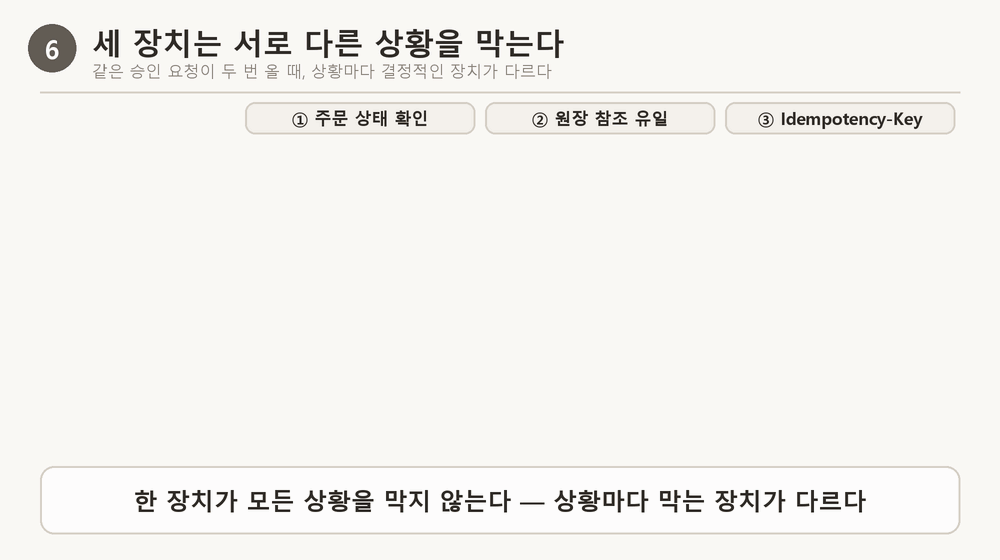
- 멱등키의 값은 같은 주문이면 몇 번을 다시 보내도 같아야 해요. 요청마다 새 무작위 값을 만들면 다시 보낸 요청이 새 요청으로 보여서 아무것도 막지 못해요. 추측할 수 없는 주문번호를 그대로 쓰는 방법이 있어요.
- 금액 조작과 남의 주문 승인은 브라우저에서 만들기 어려워서 테스트로 남겨요. 테스트에서는 승인 API 호출을 가짜로 바꿔 끼우고, 거절돼야 하는 경우에는 가짜 승인 API가 한 번도 불리지 않았는지도 확인해요.
나쁜 선택 vs 좋은 선택 — "결제 성공 페이지가 열렸어요"를 받았을 때
| 나쁜 선택 | 좋은 선택 |
|---|---|
| 성공 주소가 열리면 주소에 붙은 금액으로 바로 크레딧을 올린다 → 사용자가 주소의 금액을 100원으로 바꿔 보내면 1,000원짜리 크레딧이 100원에 나가요. 승인이 실패했는데도 크레딧이 남아요. | 저장해 둔 주문의 금액과 상태를 비교하고, 서버가 시크릿 키로 승인을 받은 뒤에만 원장에 +크레딧 줄을 쌓는다 → 금액이 다르면 승인 요청이 나가지 않고, 같은 주문이 두 번 와도 원장이 한 번만 받아요. |
식당으로 말하면, 왼쪽은 손님이 단말기에 서명하자마자 식권을 건네는 것이고, 오른쪽은 카드사가 확정해 준 뒤 영수증 번호를 장부에 적고 식권을 건네는 거예요.
이 글에 나온 숫자 — 원가와 한도를 정할 때 다시 쓸 값
위에서 잰 값 가운데 자기 서비스에서도 같은 계산을 할 때 기준이 되는 것만 모았어요. 모두 제 서비스(gpt-4o-mini, 2026년 11월 3일 기록)에서 잰 값이고, 원 환산은 1달러=1,400원으로 가정했어요. 2026년 11월 4일에 확인한 실제 환율은 1달러=1,343.93원이라 실제 원가는 이 글의 원 환산보다 약 4% 낮아요(한 건 약 0.72원). 다른 모델·다른 서비스에서도 값이 달라요.
| 무엇의 숫자인가 | 값 | 알아 둘 것 |
|---|---|---|
| 메시지 한 건의 원가(모델 호출 2번) | 약 $0.000534 (≈ 0.75원) | 입력 토큰 평균 3,203 · 출력 평균 89 기준이에요. 자기 서비스에서는 호출 수와 토큰 수를 Langfuse에서 읽어 다시 계산해요 |
| gpt-4o-mini 단가 | 입력 $0.15 / 출력 $0.60 (백만 토큰당) | 한 건 원가 = 입력 토큰 × $0.15/백만 + 출력 토큰 × $0.60/백만으로 직접 검산할 수 있어요 |
| 한 달 원가의 비율(하루 20 : 300 : 3,000개) | 1 : 15 : 150 ($0.32 · $4.80 · $48.05) | 첫 메시지 기준이라 긴 대화에서는 더 커질 수 있어요. 한도는 평균이 아니라 분포를 보고 정해요 |
| 카드 결제 수수료 | 3.4% + 부가세 10% = 3.74% | 토스페이먼츠 공식 이용요금 페이지로 확인했어요(2026-11-04). 계약 방식에 따라 달라질 수 있어요 |
| 무료 한도에 따른 한 달 손익(사용자 1,000명, 유료 5%) | 하루 10개 −168,613원 · 3개 −19,509원 · 1개 +23,092원 | 제가 세운 단순 모델이에요. 한도를 줄일수록 흑자 쪽으로 가요 |
| 한도가 가득 찬 최악의 하루 상한 | 분당 120건이 하루 내내 차면 172,800건 ≈ $92 | 인스턴스(서비스를 실행 중인 서버 하나) 안에서만 세는 한도라 인스턴스 수만큼 커져요. 배포 서비스의 최대 인스턴스는 2개라 약 $184까지 갈 수 있어요 |
직접 해 본 기록 — 크레딧과 결제를 직접 붙여 눌러 보고, 공격해 보고, 하지 못한 것까지
글 앞에서 «막는 장치가 있다»고만 말하면 실제로 어디까지 되는지 알 수 없어요. 그래서 제 서비스에 크레딧과 결제를 실제로 붙여서 눌러 보고, 공격도 해 봤어요. 순서는 ① 크레딧과 결제를 붙여 테스트 결제까지 해 보기, ② 붙이기 전의 서버에 속도 한도 공격하기, ③ 붙인 뒤의 서버에 공격하고 고치기예요.
① 도장에 크레딧과 결제를 붙이고 눌러 보기
환경은 제 컴퓨터의 도장 서버(127.0.0.1:8130)예요. 도우미 답은 가짜 LLM이라 OpenAI 비용은 나가지 않았고, 토스페이먼츠는 테스트 키라서 실제로 돈이 빠지지 않아요. 만든 것은 원장 credit_ledger와 주문 orders 표, 메시지 1건당 −1 차감(답을 만들다 실패하면 같은 번호로 +1 되돌림), 크레딧이 0이면 402, 상품 목록·주문 만들기·결제 승인 길, 결제 페이지예요. 코드는 도장 저장소의 브랜치 credit-payment-trial에 있어요.
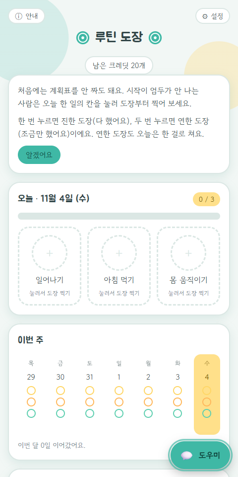
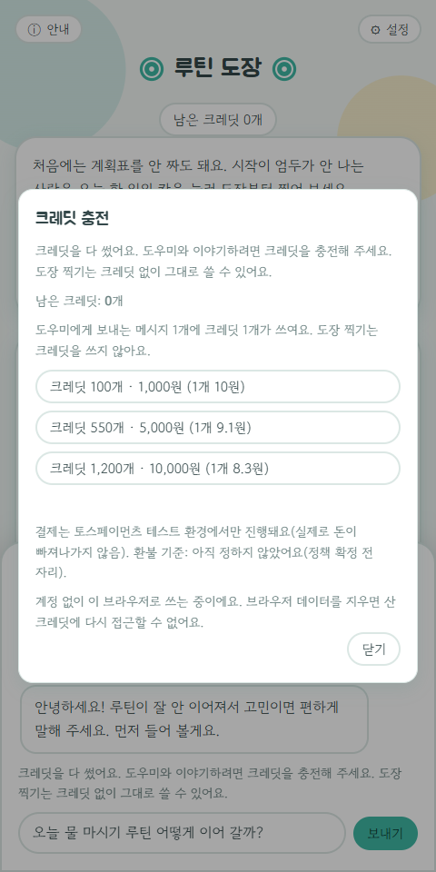
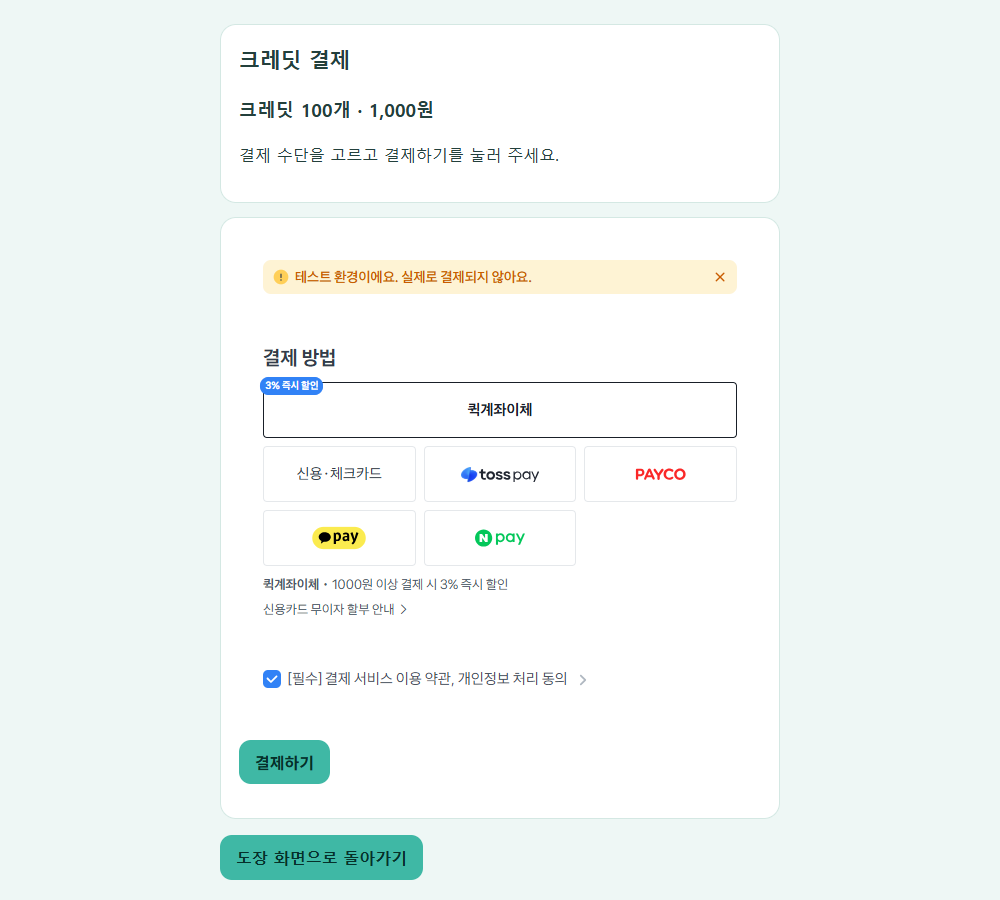
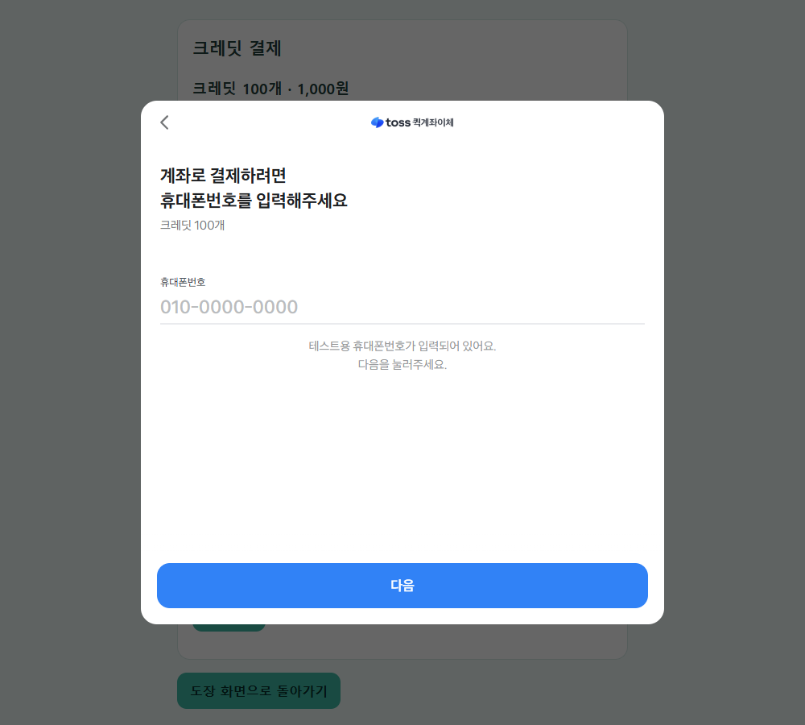
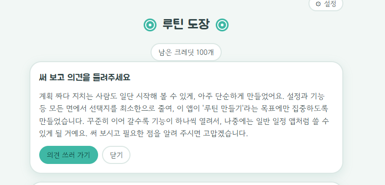
결제가 끝난 뒤 서버 쪽에서 확인한 것이에요(주문 번호와 paymentKey는 가렸어요).
- 서버 로그: 성공 페이지(
/pay/success?…&amount=1000) → 토스 승인 호출(idempotencyKey는 주문 번호와 같은 값) →order completed … credited=True→POST /api/payments/confirm 200순서였어요. - 데이터베이스: 주문이
status=done, 금액 1000, 크레딧 100, 승인 시각 2026-11-04 13:51:27(+09:00)이었고, 원장에는 +100 줄이 참조order:<주문번호>로 정확히 한 줄 쌓였어요. - 같은 승인 요청을 두 번 더 우리 서버에 보냈더니 둘 다 200이 돌아왔고, 원장의
order:줄은 그대로 한 줄이었어요. - 키: 클라이언트 키는 화면 설정(
/api/config)에 있고 시크릿 키는 없어요. 서버 로그와 캡처 실행 기록에서test_gsk문자열은 0건이었어요.
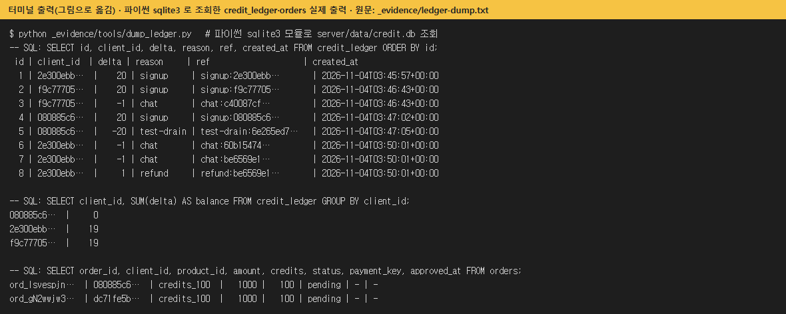
refund), 무료 지급 signup, 대기 중인 주문이 보여요.한계: 결제는 한 번, 제 컴퓨터에서, 토스페이먼츠 테스트 환경으로만 했어요. 어떤 결제수단으로 눌렀는지는 이 글에 기록하지 않았어요. 환불·결제 취소, 웹훅, 배포된 서비스에서의 결제는 구현하거나 시험하지 않았어요. 데이터베이스에는 결제하다 만 «대기» 주문이 5개 남아 있어요.
추가 대화권 충전 화면
도우미 대화는 하루 무료 한도 안에서는 무료이고(서버 설정값은 사용자당 하루 30번, 같은 주소당 90번), 한도를 다 쓴 뒤에만 «추가 대화권»(100번 1,000원 · 550번 5,000원 · 1,200번 10,000원)이 대화 한 번에 1개씩 쓰여요. 위의 화면 1~6은 이 방식으로 바꾸기 전의 크레딧 화면이에요. 아래는 최신 코드로 다시 찍은 충전 화면이고, 결제를 다시 누르지는 않고 결제위젯이 뜨는 데까지만 확인했어요.
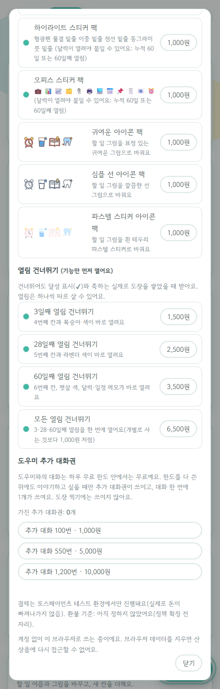
② 붙이기 전의 서버에 속도 한도 공격하기
크레딧을 붙이기 전에 먼저 기존 도장 서버를 가짜 LLM(외부 API를 부르지 않는 시험용 응답)으로 제 컴퓨터에서 띄우고, 시험마다 서버를 새로 띄워 한도 카운터를 0으로 맞춘 뒤 요청을 보냈어요. 결제 대행사에는 아무 요청도 보내지 않았어요. 이 서버에는 잔액과 계정이 없어서 «잔액 1에서 동시 10건», «새 계정을 만들어 무료 크레딧 반복 받기»는 그대로 할 수 없었고(크레딧을 붙인 뒤의 같은 공격은 아래 ③), 가장 가까운 것으로 «같은 주소에서 한도 이상을 동시에 보내기»와 «주소를 바꿔 가며 보내기»를 했어요.
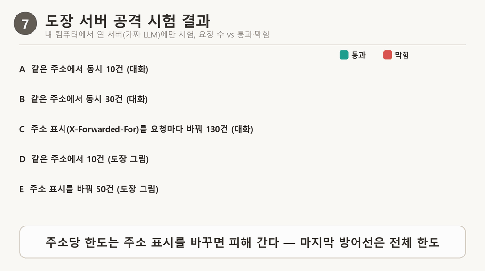
| 시험 | 요청 수 | 통과(200) | 막힘(429) |
|---|---|---|---|
| A. 같은 주소에서 동시에 10건(대화) | 10 | 10 | 0 |
| B. 같은 주소에서 동시에 30건(대화) | 30 | 20 | 10 |
C. 요청마다 주소 표시(X-Forwarded-For 헤더)를 바꿔 130건(대화) | 130 | 120 | 10 |
| D. 같은 주소에서 10건(도장 그림) | 10 | 5 | 5 |
| E. 요청마다 주소 표시를 바꿔 50건(도장 그림) | 50 | 30 | 20 |
- B: 동시에 30건을 보내도 주소당 한도(분당 20)를 넘어 통과한 요청은 없었어요. 이 크기에서는 «동시에 보내 한도를 뚫는» 일이 보이지 않았어요(더 많은 동시 요청은 시험하지 않았어요).
- C·E: 서버는 요청 헤더
X-Forwarded-For의 첫 값을 그대로 사용자 주소로 써요. 이 값을 요청마다 바꾸면 주소당 한도(대화 20, 도장 그림 5)를 피해 가고, 전체 한도(대화 120, 도장 그림 30)에서만 멈춰요. 새 계정을 반복해서 만들어 무료 크레딧을 받는 것과 같은 모양의 구멍이에요. - 돈으로 환산하면(상한 계산): 전체 한도 분당 120이 하루 내내 차면 172,800건 × $0.000534 ≈ $92(약 13만 원, 환율 1,400원 가정. 실제 환율로는 약 12.4만 원)예요. 이 한도는 인스턴스 안에서만 세므로 최대 인스턴스 개수만큼 곱해져요. 배포 서비스는 서비스 설정 3과 리비전 설정 2가 함께 있는데, Cloud Run(구글 클라우드에서 서비스를 실행해 주는 서비스) 공식 문서(서비스 최대 인스턴스 설정)에 둘이 함께 있으면 작은 값이 적용된다고 적혀 있어서 2개예요. 그러면 상한은 약 $184예요. 이 상한은 한도가 끝까지 차는 최악의 경우예요.
③ 크레딧·결제를 붙인 서버 공격하고, 고치고, 다시 시험하기
도우미 답은 가짜 LLM, 위치는 제 컴퓨터이고, 승인 API를 가짜로 바꿔 끼운 시험 서버와 진짜 키를 쓴 서버로 했어요. 시험 서버는 크레딧 로직만 보려고 속도 제한을 1분 1,000회로 올렸어요(실제 기본값은 주소당 1분 20회).
| 공격 | 결과 | 숫자 |
|---|---|---|
잔액 1인 id로 /api/chat 10개 동시: 잔액 읽기 → 쓰기를 따로 하는 «안일한 구현» | 막지 못함 | 3번 시도에서 답을 받은 수 5·10·10, 끝 잔액 −4·−9·−9 |
같은 공격: 트랜잭션(여러 동작을 한 덩어리로 묶는 데이터베이스 기능, BEGIN IMMEDIATE)으로 확인과 기록을 한 번에 | 막음 | 3번 모두 답 1건, 402 9건, 끝 잔액 0 |
| 새 client_id 50개로 무료 20개씩 받기: 상한 없음 | 막지 못함 | 50/50 받음, 합계 1,000크레딧 |
| 같은 주소 하루 3번 상한을 넣은 뒤 | 막음 | 3개만 받음, 합계 60크레딧 |
상한을 넣은 뒤에도 요청마다 X-Forwarded-For 첫 값을 바꿈 | 못 막음(남은 구멍) | 50/50 받음, 합계 1,000크레딧 |
주문할 때 화면이 amount=1을 같이 보냄 | 막음 | 서버 상품표의 1000으로 저장 |
| 금액을 바꾼 승인 요청(1000 → 100) | 막음 | 400 amount_mismatch, 승인 API 호출 0회 |
| 남의 주문 승인 요청 | 막음 | 404 order_not_found, 승인 API 호출 0회 |
| 같은 승인 요청을 차례로 두 번 | 한 번만 반영 | 둘 다 200, 두 번째는 already: true, 원장 order: 줄 1개 |
| 같은 승인 요청 5개 동시 | 크레딧은 한 번만 | 승인 API는 5번 불림(① 주문 상태 확인이 뚫림), 원장 order: 줄은 1개(② 원장 참조 유일이 막음) |
- 안일한 구현은 일부러 늦추지 않아도(지연 0ms) 잔액보다 많이 통과했고 잔액이 음수가 됐어요. 앞에서 그린 경쟁 상태가 실제로 일어난 거예요. 트랜잭션으로 확인과 기록을 한 번에 하자 통과가 1건으로 줄었어요.
- 동시 5개 승인 요청에서 ①이 뚫려 승인 API가 5번 불린 것은 «동시 도착은 ②가 막는다»는 설명과 같아요. 실제 토스페이먼츠에서는 같은
Idempotency-Key(= 주문 번호)라서 첫 응답을 돌려준다고 멱등키 문서에 적혀 있어요. 이 부분은 가짜 승인 서버로만 시험했어요. 실제 토스페이먼츠로 하려면 결제창 인증(reCAPTCHA)을 거친 paymentKey가 필요해서 사람이 결제를 한 번 더 눌러야 해요. - 무료 크레딧 공격은 같은 주소 하루 3번 상한으로 줄였지만, 이 상한은
X-Forwarded-For의 첫 값을 주소로 믿기 때문에 요청마다 값을 바꾸면 다시 뚫려요. 고치려면 배포 환경의 프록시가 붙이는 값 중 어느 자리를 믿을지 정해야 하는데, Cloud Run이 이 헤더를 어떻게 붙이는지는 확인하지 못해서 고치지 않았어요. - «상한 없는 상태»는 상한 코드를 넣은 뒤
FREE_GRANTS_PER_IP_PER_DAY=0(제한 없음)으로 띄워 재현한 것이고, 상한 코드가 없던 시점에 따로 돌린 것은 아니에요.
그래서 지금 어디까지 막혀 있나
| 문제 | 지금 막혀 있나 | 근거 |
|---|---|---|
| 한 주소에서 쏟아지는 요청 | 막힘 | 대화는 분당 20에서 멈춤(시험 B) |
| 주소를 바꿔 가며 쏟아지는 요청 | 일부만 | 주소당 한도는 피해 가고 전체 한도(120)에서만 멈춤(시험 C) |
| 한 사람이 하루 종일 쓰는 경우 | 시험 서버에서는 크레딧으로 막힘 | 잔액이 0이면 402예요. 배포된 도장에는 아직 크레딧이 없어요 |
| 돈을 받는 흐름 | 내 컴퓨터의 시험 서버에 구현, 배포는 안 됨 | 테스트 결제 1회 성공, 금액 조작·남의 주문·중복 승인은 시험에서 막혔어요. 실제 서비스(Cloud Run)에는 아직 없어요 |
| 인스턴스가 여러 개일 때의 합산 | 못 막음 | 한도 카운터가 인스턴스 안에서만 세요 |
계산한 것, 못 한 것, 남은 숙제
이 글의 값은 «측정한 것»과 «계산한 것»으로 나뉘어요.
- 측정한 것: 한 건의 원가 $0.000534(실제 호출 4건의 평균). 모델 이름이 비어 비용이 안 구해진 호출 237개는 모두 평가 실행(
eval_run) 기록이라서 비어 있었어요. 실제 대화 기록에는 모델 이름이 들어 있어요. - 계산한 것(측정은 아니에요): 긴 대화와 도장 그림 한 건의 원가. 실제 OpenAI 키는 배포 서비스의 비밀 저장소에만 있어서 꺼내 쓰지 않고, 도장 서버 코드를 가짜 LLM으로 돌려 모델에 보내는 글을 가로챈 뒤 토큰(OpenAI 토크나이저
tiktoken)을 세고 공식 단가를 곱했어요. 이 방식은 첫 메시지의 입력을 측정값(3,203토큰)보다 약 11% 크게 세요(계산 3,559). 서버는 모델에 최근 20줄(10턴)까지만 보내고 메시지 하나를 600자로 잘라요.- 첫 메시지 $0.000578(측정 평균 $0.000534), 10턴 기록(짧은 메시지) $0.000757로 첫 메시지의 약 1.3배예요.
- 20줄이 모두 600자로 꽉 찬 가장 긴 경우는 $0.0024(약 3.2원)로 약 4배예요(출력은 측정 평균으로 계산).
- 도장 그림은 입력이 178토큰($0.000027)이고, 출력이 코드의 최대 2,500토큰이면 한 건 상한이 $0.0015(약 2원)예요. 실제 출력 길이는 재지 못해서 상한만 알아요.
- 직접 할 수 없어서 못 한 것: 위 계산값을 실제 호출로 재는 일(배포 서비스의 키를 쓰거나 추적을 켜야 해요), 실제 토스페이먼츠로 하는 «동시 승인 5개» 시험(결제창 인증을 거친 paymentKey가 필요해서 사람이 결제를 한 번 더 눌러야 해요).
- 정한 것과 정할 것: 도우미 대화는 하루 무료 한도 안에서는 무료이고 한도를 다 쓴 뒤에만 추가 대화권을 써요. 한도 숫자와 대화권 가격은 호출당 비용을 재기 전의 임시값이라 이 글의 원가로 근거를 붙이고, 환불 기준과 결제 대행사(PG) 선택도 정해야 해요.
- 이 글 범위 밖이라 하지 않은 것: 환불·결제 취소·웹훅, 배포 서비스에서의 결제, 운영용 데이터베이스 선택, 같은 메시지를 큰 모델로 비교하는 일. 주소 위장(
X-Forwarded-For)도 고치지 않았어요. 후보는 ① 주소를 믿을 수 있는 위치의 값으로 읽기, ② 크레딧·하루 한도처럼 주소와 상관없는 한도(③ 시험에서 구현해 다시 시험했어요), ③ 인스턴스 합산 한도예요. 배포 서비스에서도 위장이 통하는 것은 확인했어요(2026-11-04: 빈 메시지 요청이라 모델 비용은 없었고, 같은 주소 25번은 21번째부터 429, 요청마다 값을 바꾼 25번은 모두 통과).
이럴 때 의심하세요 — 돈이 나가거나 들어오는 곳
돈과 관련된 문제는 오류 메시지보다 청구서나 «크레딧이 이상해요»라는 말로 먼저 와요. 아래 증상이 보이면 원가 기록과 서버의 승인 기록부터 열어요.
증상이 아직 없어도, AI에게 «결제 기능 붙여 줘»라고 부탁한 직후라면 크레딧을 올리는 코드가 «승인 성공 뒤»에 있는지 한 번 확인하고 넘어가요.
| 이런 증상이 보이면 | 먼저 열어 볼 자리 | 확인 방법 |
|---|---|---|
| 사용자 수는 그대로인데 모델 요금 청구서만 갑자기 몇 배로 나와요. | Langfuse의 호출 기록(generation) 목록에서 기간별 비용 합과 호출 수. 한 사용자나 한 주소가 쏟아 낸 것인지, 주소가 여러 개인지 봐요. | 기간을 좁혀 비용 합을 비교하고, 서버가 사용자를 구별하는 기준(주소 표시)을 믿을 수 있는지 봐요. 전체 한도와 최대 인스턴스 수로 하루 상한을 계산해 봐요 — 직접 해 본 기록 |
Langfuse 화면에서 비용이 no cost로 비어 있어요. |
그 호출 기록의 모델 이름 칸. 모델 이름이 비면 토큰 수는 남아도 비용을 못 구해요. | 모델 이름이 비었으면 비용 대신 토큰 수를 보고, 단가를 곱해 직접 계산해요 — 이 글에 나온 숫자 |
| 결제 성공 페이지는 떴는데 크레딧이 안 늘거나, 반대로 돈은 안 냈는데 크레딧이 늘었어요. | 서버의 승인 요청 기록과 주문 상태. 크레딧을 올리는 코드가 승인 성공 응답 뒤에 있는지 봐요. | 성공 주소로 이동했다는 것만으로 크레딧이 오르면 안 돼요. 승인 성공을 받은 뒤에만 원장에 줄이 쌓이는지 확인해요 — 결제 흐름 |
| 같은 결제인데 크레딧이 두 번 들어갔어요. | 원장에서 같은 참조(주문번호)가 붙은 줄이 둘인지. 승인 요청에 붙인 멱등키가 매번 새 값인지. | 원장 참조 칸이 유일한지, 멱등키가 같은 주문이면 같은 값인지 봐요. 요청마다 무작위 값을 만들면 아무것도 막지 못해요 — 같은 요청이 두 번 오면 |
실행: 코딩 에이전트에 붙여넣기 — Claude Code 등
이 프로젝트에서 사용자 구별에 쓰는 값(IP 주소, 헤더, 로그인 정보)을 어디서 읽는지와, 요청 한도를 세는 코드가 어디에 있는지 파일 이름과 줄 번호로 보여 줘.
그리고 크레딧이나 결제와 관련된 코드가 이미 있다면, 크레딧이 올라가는 줄이 승인 성공 응답 뒤에 있는지 알려 줘.
아직 코드는 고치지 마.- 원가 — 서비스를 제공하는 데 드는 돈으로, 쓸수록 늘면 변동비, 쓰든 안 쓰든 매달 나가면 고정비라고 불러요. ↩
- 크레딧 — 사용자가 미리 사 두는 이용권으로, 이 글에서는 메시지 한 건에 1개가 줄어요. ↩
- 원장 — 늘고 줄어든 기록을 한 줄씩 쌓기만 하는 표로, 잔액은 그 줄들의 합계라서 가계부와 같아요. ↩
- 결제 대행사(PG) — 카드사와의 연결을 대신 맡는 회사로, 이 글에서는 토스페이먼츠를 예로 들었어요. ↩
- 결제 승인 — 우리 서버가 결제 대행사에 «이 결제를 확정해 달라»고 요청해 돈이 실제로 빠지는 단계로, 사용자가 카드사 확인을 마치는 «인증»과 달라요. ↩
- 멱등키(Idempotency-Key) — 같은 요청이 여러 번 와도 결과가 한 번 받은 것과 같게 만들려고 요청에 붙이는 값으로, 같은 값을 보내면 결제 대행사가 다시 처리하지 않아요. ↩
- 전환율 — 무료 사용자 가운데 크레딧을 실제로 사는 사람의 비율이에요. ↩
- successUrl — 인증이 끝나면 결제 대행사가 브라우저를 보내는 우리 서버의 주소로, 결제 키·주문번호·금액이 주소 뒤에 붙어 와요. ↩
"AI 서비스로 내놓기" 시리즈
(13) 메시지 한 건에 0.75원, 그런데 계정 하나가 한 달에 6만 7천 원 — 원가를 계산하고 크레딧 결제 붙이기 (이 글)